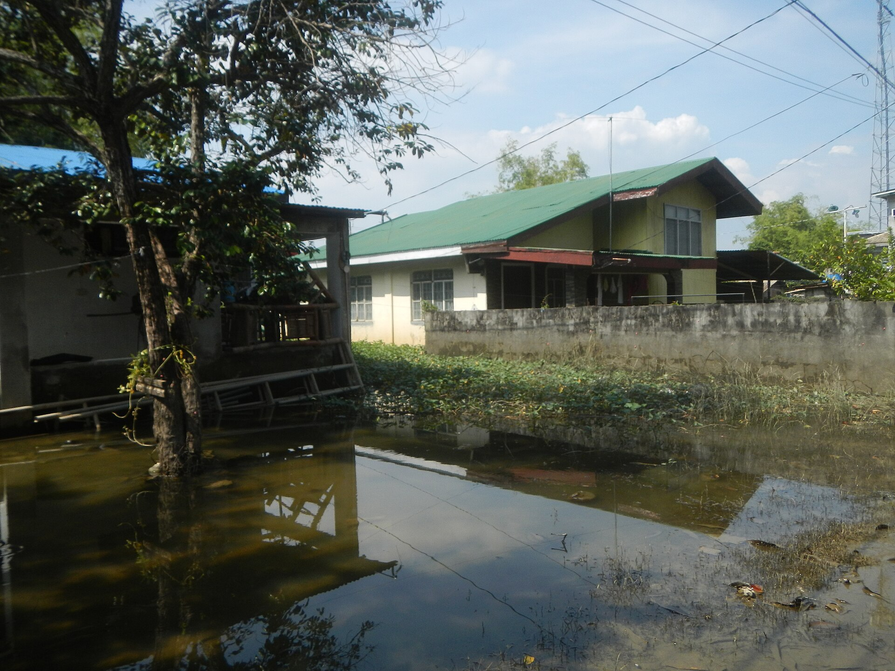
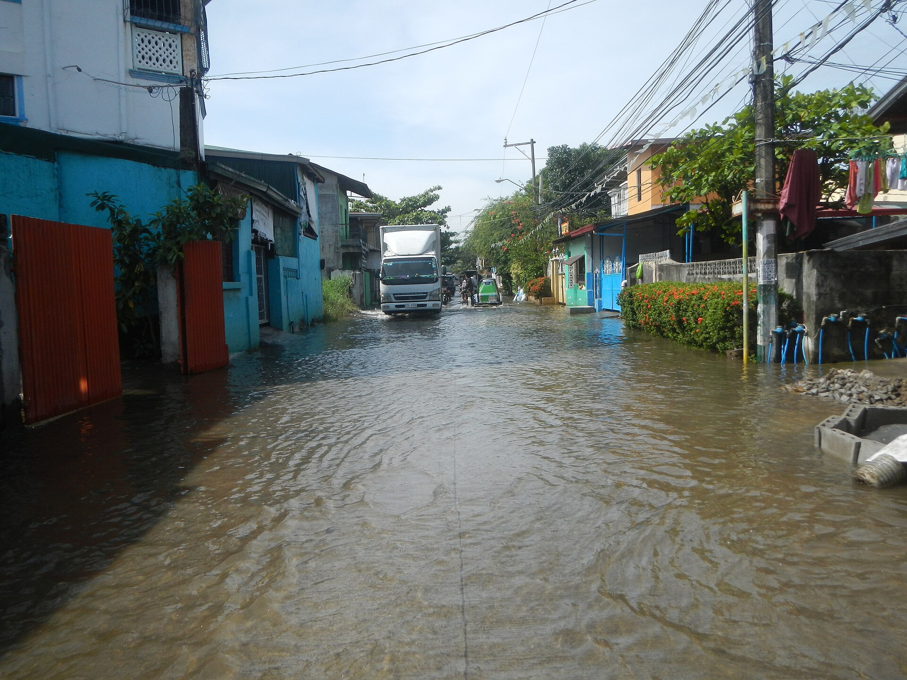

Why it sinks, and what follows.
Three topics tell the story: groundwater extraction, flooding, and damage to the things we build.
Pick a topic
Use the tabs, or scroll to read all three.
Groundwater extraction
Wells supply homes, fishponds, farms and businesses. When pumping removes water faster than it is replaced, pressure in the aquifer drops. The soft sediments above and within it compress, and the land surface settles.
- A study using Sentinel-1 satellite radar found that areas within 500 m of pumping stations in Hagonoy and Calumpit sank at about 70 mm/year, against about 65 mm/year farther away. The difference was statistically significant.
- Hagonoy's yearly extraction of about 9 million m³ may account for roughly 81 mm/year of sinking (a model estimate, not a direct measurement).
- Researchers recommend limiting groundwater use in high-subsidence zones and improving water-use data from utilities.
Other contributors named in the sources: natural sediment compaction, the weight of urban growth, and sea-level rise. Some residents also point to reclamation works in Manila Bay; views differ and this page does not treat that as established.
Flooding
Hagonoy behaves like a catch basin. River water from upstream and tidal water from Manila Bay both press on a town that has little elevation to spare. Sinking land lets high tides, river backwater and heavy rain reach farther and stay longer.
- Tidal flooding can happen on dry days. In San Agustin, a barangay captain and residents told The Philippine Star that streets now work like canals.
- Floodwater recedes slowly because the land that should drain it is lower than the water outside.
- Subsidence, higher seas and heavy rain stack on top of each other. Sinking raises the starting level for every flood.
The DENR has said sea level in Bulacan is rising about three times faster than the global average (reported by The Philippine Star, 2025).
Infrastructure damage
Uneven settling cracks foundations and slabs, tilts poles and walls, and lowers roads and dikes below the water they were built to hold back.
- The UP Resilience Institute notes sinking roads and homes in Hagonoy and neighbouring Obando.
- Raised concrete walkways and check gates in San Agustin are now overtopped by high tides, according to The Philippine Star.
- Families spend their own money to raise floors, gates and vehicles. In the same report, a tricycle driver spent about ₱10,000 raising his vehicle.
- Coastal groundwater can become salty or contaminated as the land and sea level change (UP Resilience Institute).

From cause to effect
Several pressures act at once. Each one on its own is manageable; together they compound.
Pumping
Lowers aquifer pressure and compacts sediments.
Sea-level rise
Raises the water that sinking land has to face.
Floods
Tide, river and rain reach farther and last longer.
Damage
Roads, homes and dikes lose height and strength.